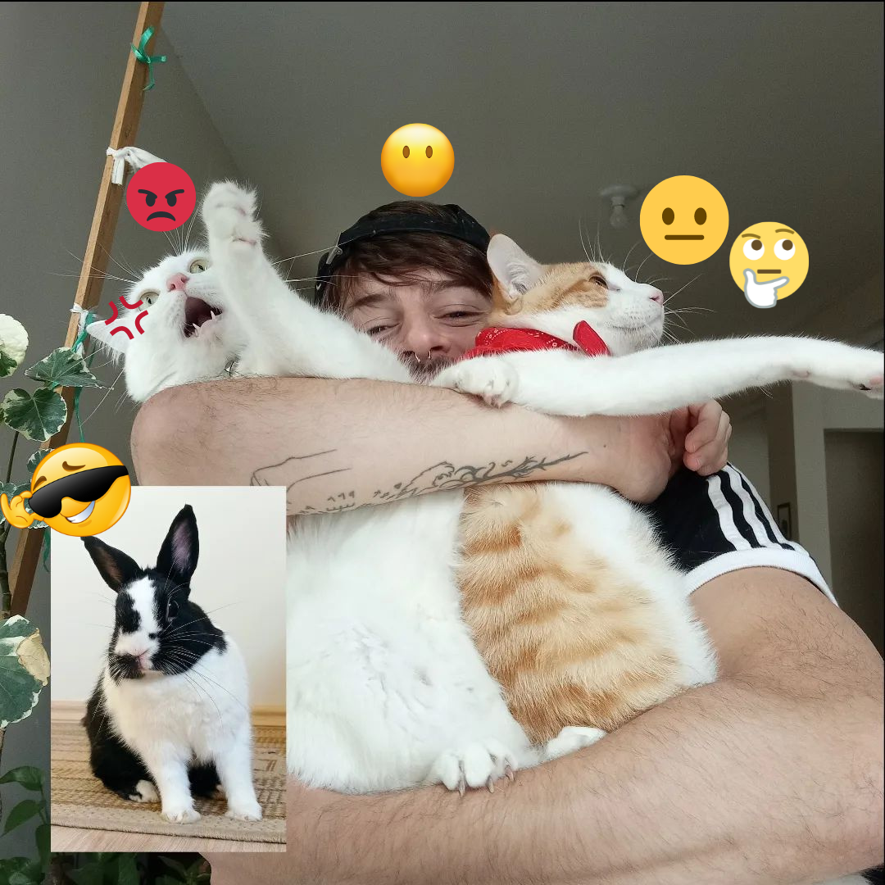
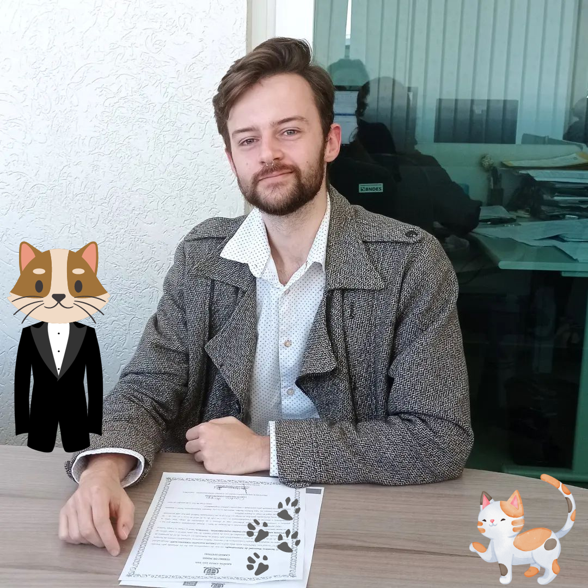

Querido professor Carlos
 
1 - Minhas características mais marcantes acredito que seja a honestidade, responsabilidade e comprometimento no que faço.
2 - Gosto de jogos, conversar com familiares e amigos, fazer atividades em que me divirto, etc.
3 - Sou bom em alguns jogos em que tenho muito conhecimento e estratégia, gentil, calmo e uma pessoa com muito respeito.
4 - Ficar em casa jogando no PC, conversar com amigos e familiares, etc.
5 - Ser paciente, observador, uma pessoa muito flexível.
6 - Inglês bom e conhecimento em geral.
7 - Não saber muito sobre Inglês e resolver problemas.
8 - Sobre programação, jogos de PC, coisas em que tenho conhecimento.
9 - Nenhuma.